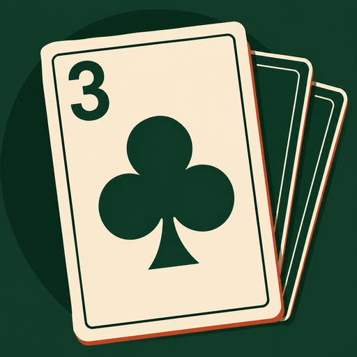

Tres – Pusoy Dos
A card game by North Pixel Labs
Pusoy Dos — the Filipino card classic, also known as Big Two — played solo against three AI opponents, with friends on the same Wi-Fi, or online with friends in a private room. No sign-in needed.
One link for any phone: northpixelhq.github.io/tres
What the app does
Tres is a complete game of Pusoy Dos for Android, and for iPhone and iPad. The 3 of clubs opens every game. Play a single, a pair, a trio or a five-card hand, beat what is on the table, or pass. Every game runs all the way out to a full 1st, 2nd, 3rd and 4th place.
- Play online with friendsMake a private room and share its code, or invite a friend by their Player Code. Everyone at the table is invited or approved, AI fills any open seats, and there are no ads in Online rooms. No public matchmaking and no typed chat — just quick expressions to tap. Android, iPhone and iPad players play together.
- Play together, offlinePlay with friends on the same Wi-Fi — up to 4 players, no internet, no account. Host a room, join with a Room Code or QR, and fill any open seats with AI.
- Play anywhereSolo and same Wi-Fi play run on your devices. Start a hand on the bus, in a queue, or with no signal at all: only Online play needs the internet.
- Three levels of opponentEasy, Standard, and Expert. The opponents hold back their control cards, watch what has already been played, and make you earn the lead.
- Make the table yoursUnlock complete table themes with Cosmetic Tokens earned by playing and collecting Milestones, or buy a theme or token bundle in the optional Shop. Every purchase is cosmetic only: it changes how the table looks and sounds, never the cards, rules, or opponent strength.
- Honest about adsTres is free and shows ads between games — never in the middle of a hand, and never in Online rooms. Nothing in the game is locked behind one.
Google Play Games and Game Center — optional
If you choose to sign in to Google Play Games, your Milestones appear as achievements on your Play Games profile, and your progress can be backed up to your own Google account and restored on another phone. The game is complete without it, and nothing is sent unless you are signed in. This arrives in version 1.18.0 of the app.
On iPhone and iPad, the same optional sign-in is Game Center: your Milestones appear as achievements on your Game Center profile, and your progress can be backed up to your own iCloud and restored on another iPhone or iPad. It arrives with the App Store release, and the game is complete without it.
Your Online profile is separate from both. On Android you can protect it with Play Games, to keep it if you reinstall or change phones. On iPhone and iPad it stays on that device: Game Center is not used for Online.
Privacy
Solo and same Wi-Fi play run on your devices and do not contact our Online service. Same Wi-Fi play sends room information to the other phones on your local network.
Online play is optional and needs no sign-in. It creates a private guest profile and sends our server what it needs to run private rooms, such as your display name, your Player Code and the games you play there. The Online Terms set its rules, and Delete your Online profile says how to delete it, in the app or by email.
Google serves the ads between games, never in Online rooms. Google Play on Android and the App Store on iPhone and iPad handle Shop payments, and we do not receive your payment-card details. There are no North Pixel Labs gameplay analytics, and Online profile data is not used for advertising.
Read exactly what is stored and what is sent, and for how long, in the privacy policy.